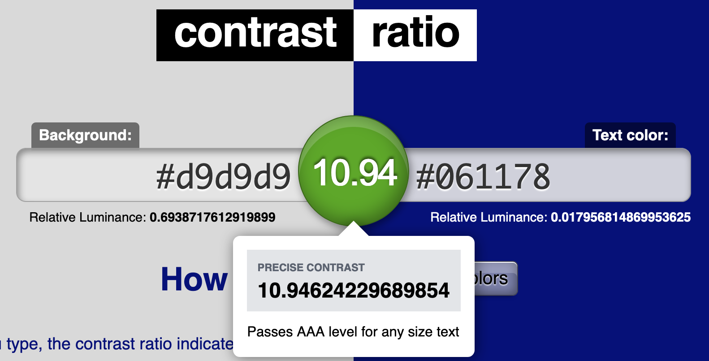

Legibility
Legibility refers to the overall clarity of type in a system. Legibility is affected by a few different factors, all equally important.
Size
The size of text in a system correlates very much with legibility.
You probably have no issues reading this text.
This is probably a lot harder to read.
The rule of thumb for minimum text size in the web world is around 12pt, but there's more to it than this. When designing for digital devices, it is important to consider that user settings can have an effect on type size. Because of this it is becoming more normal to see the use of relative units over absolute units.
For web design, using the unit em is the easiest way to start playing with relative units. 1em is equal to the browser's default text size.
Say we have a browser where the default text size is 14pt, then 1em is equal to 14pt. The text size can, in turn, be altered by incrementing the em value, so 1.25em to make the text bigger or 0.75em to make it smaller.
There are many specifics when it comes to em sizing, however, but it is good to use the value of 1em for the body styling of a page to set the overall font-size based upon a user's settings. We should avoid having a system where these settings aren't used, as there could be reasons for the user's current settings (think accessibility).
For more information on font sizing and the units HTML and CSS support, see Mozilla's MDN web docs font-size page.
Thus, we should be concious of sizing for text, avoid using anything smaller than 12pt when using absolute units, and consider using em or other relative units to better accommodate a user's settings.
Typeface
Some typefaces are simply more legible than others. We have a variety of typeface options out there, but in terms of legibility serif and sans serif typefaces are the ideal choices for legibility. Decorative typefaces, like cursives, are not always the most legible, so they should be avoided if legibility is a concern.
Serif or Sans Serif
First of all, what is a serif? Serif is a word that just means decoration. A serif typeface will have serifs while a sans serif does not, hence sans or without.
I am a serif. I have serifs.
I am a sans serif. I do not have serifs.
Under most circumstances, there are no major legibility differences between a serif and a sans serif typeface. The only difference is aesthetic — serif typefaces usually are associated with being more formal, for instance, but there are no rules about when one is better than the other in terms of aesthetics.
So, consider choosing a typeface which is legible by any potential users, whether it be a serif or a sans serif. Avoid using decorative fonts, like comic sans or cursives, to ensure that the text is legible for all users.
Contrast
Contrast is something briefly touched on in the accessibility page, but it plays a major role in legibility for any and all users.
Contrast is high when the overall shades of the foreground and background are opposites. Dark text on a light background or light text on a dark background result in high contrast.
Contrast is low when the shades of foreground and background are similar. Light text on a light background and dark text on a dark background are low contrast.
This contrast is quite low. The shade of gray is too close to the background.
This contrast is pretty low, too. They're different colors, but the luminance or brightness and shade of this blue is too similar to the gray's to have a high enough contrast.
This is decent enough contrast to be passable. It may not be the best choice for accessibility, however.
This contrast is quite high. There should be no issues with reading this.
Evaluating Contrast
It is not advisable to blindly pick colors and go by eye when judging contrast. Instead, there are many tools available to ensure that contrast is high enough to maintain legibility.
Using a contrast ratio checker, such as contrast-ratio.com, we can check whether or not the colors we want to use have high enough contrast.
Plug the "Background" color into the left text area and the foreground or "Text color" into the right text area, and the contrast ratio is evaluated.
Hovering over the contrast ratio value between the two text fields will display some more information about the current inputs.
Following WCAG 2.0 rules on contrast, the information displayed about the current ratio conveys whether or not it passes these standards.
Our brand colors for designbyte show a contrast of 10.94, which passes the WCAG standards at a AAA level, meaning the dark blue is an appropriate use for text of any size on the light gray background color.
More information related to contrast and similar topics can be found in the accessibility sections and in the accessibility resources.
So, to ensure legibility is adequate, it is important to ensure that contrast is high enough between the type and background elements. Use contrast ratio checkers to better gauge the contrast between two colors. Avoid blindly gauging contrast between elements, and choose colors with the intent of maintaining legibility.
Line Length
Line length plays a role in the legibility of text with regard to overall processing of data. If a line of text is too long or too short, the data can be harder to read and process.
While research has should that a line length of around 95 characters (about 20 average words per line) can be read the fastest, shorter lines of around 40 to 50 characters (about 12 average words per line) are preferred by most people.[Bailey, Bob.]
With this in mind, we should try to keep line length, for large blocks of text, to around 50 characters per line. This can be altered with settings such as margins. Setting the max-width of the container for large texts can be useful in adjusting line-length for responsive interfaces.
To maintain good legibility, we should avoid having strings of text be too long or too short, as this can hinder reading.
Line Spacing
Line spacing refers to the overall space in between lines and blocks of text. If the space between lines is too small, finding the next lines can be inhibited, whereas if lines are too close then reading blocks of text is difficult.
In print, this is referred to interchangeably as leading, based upon the physical lead strips that went in between lines of text on printing presses. In the modern day, this is refered to things like line spacing, line height, or leading.
The rule of thumb for space in between lines of text is 1-4pt plus the current text setting. So, if we're using 14pt type, we'd want a leading of 15-18pt.
If we have a line height that's too large, navigation between lines gets pretty strange and it's not as apparent if a line belongs to the same body of text or not.
If the line height is too small, lines get congested feeling and becoming quite difficult to read. It's even more daunting to look at a large block of text where the line height is very small, as it becomes easier to lose the current position. This is not fun to read or look at.
In the web world, this can be adjusted with the line-height attribute. The attribute accepts the same size formats as font-size, so we can use pt for an absolute size or things like em for relative sizing.
The line-height can be adjusted for just about all text elements, but the best bet is to set a base line-height for the body, then adjust margin or line-height values individually for headings and the like only as needed. This will allow for consistent settings, versus setting the line-height for each and every text selector.
The rule of thumb for space in between lines of text is 1-4pt plus the current text setting. So, if we're using 14pt type, we'd want a leading of 15-18pt.
If we're using relative units like em, just try setting line-height to a couple of decimal points, 0.2 to 0.5 depending on size, greater than the font-size.
Conclusions
It is important to consider all of these factors when managing text content. Text size, typeface, line length, and line spacing all have an important role in communicating content well, and become more important as the size of a text block grows.
Consider accessibility while working with type settings in general, and consistency when working with a large system or family of systems.